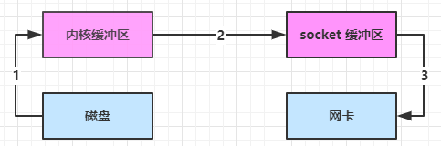

对字节数组的封装
-
使用
ByteBuf buffer = ByteBufAllocator.DEFAULT.buffer(10);
优点
- 直接内存：默认创建直接内存，虽然创建销毁代价大，但是读写性能高，不受 GC 影响，需要主动释放
- 池化：可以重用池中的 ByteBuf 对象，高并发下可以节约内存，默认开启
- 自动扩容：写入大小不超过 512，选择下一个 16 的整数倍；如果超过 512，选择下一个 2^n。
- 读写指针分离，不用切换读写模式
- 很多方法体现了零拷贝
- 支持链式调用，使用方便
组成
- 容量：初始容量
- 最大容量：默认是 2^31 ，当容量不够，自动触发扩容
- 写指针：记录当前写的位置
- 读指针：记录当前读的位置，最多能读到写指针
读取写入
读取使用方法 readInt readByte ...，读取过的字节就作废了，下次再读就继续往后读，如果还想再读，可以使用标记：
markReaderIndex();
readInt();
... ...
resetReaderIndex();
或者使用 get 方法，不会改变读指针
内存回收
UnpooledHeapByteBuf：等待 GC 自动回收UnpooledDirectByteBuf：特殊方法回收PooledByteBuf：更复杂的规则回收
Netty 提供了统一的引用计数法回收内存，每个 ByteBuf 都实现了 ReferenceCounted 接口：初始时引用计数为 1；调用 release 使计数 -1，等于 0 时内存被回收；调用 retain 使计数 +1。
由于 pipeline 有可能使当前 handler 的 ByteBuf 传给下一个 handler，因此谁最后使用 ByteBuf 谁调用 release。
如果我们不手动释放，pipeline 队列的 head 和 tail 也会自动帮我们释放（前提是 ByteBuf 被我们传到了 head 和 tail）。
【零拷贝】方法
slice
slice 切片可以将原始 ByteBuf 切成多个小的 ByteBuf，使用的还是原来的内存，并没有发生复制，只不过每个切片在原油的 ByteBuf 位置上维护读写指针。
- 切片后最大容量有限制
- 释放原有 ByteBuf，切片不可用

ByteBuf buffer = ByteBufAllocator.DEFAULT.buffer(10);
buffer.writeBytes(new byte[]{'a', 'b', 'c', 'd', 'e', 'f', 'g', 'h', 'i', 'j'});
buffer.slice(0, 5);
buffer.slice(5, 5);
duplicate
截取了原始 ByteBuf 所有内容，并且没有扩容的限制，也是与原始 ByteBuf 使用同一块底层内存，只是读写指针是独立的
注：copy 会将底层内存数据进行深拷贝，因此无论读写，都与原始 ByteBuf 无关

compositeBuffer 创建 CompositeByteBuf 对象
可以将多个 ByteBuf 合并为一个逻辑上的 ByteBuf，避免拷贝
ByteBuf b1 = ByteBufAllocator.DEFAULT.buffer(2);
ByteBuf b2 = ByteBufAllocator.DEFAULT.buffer(2);
b1.writeBytes(new byte[]{'a', 'b'});
b2.writeBytes(new byte[]{'c', 'd'});
CompositeByteBuf b3 = ByteBufAllocator.DEFAULT.compositeBuffer();
b3.addComponents(true, b1, b2); // true 可以使读写指针自动增长
文件传输的零拷贝
和 netty 的零拷贝不太一样。
java 的 IO 实际不是物理设备级别的读写，而是缓存的复制，底层的真正读写是操作系统来完成的。读的时候调用系统接口，先读到内核缓冲区，再复制到用户缓冲区；写的时候先将用户缓冲区内容复制到 Socket 缓冲区，再写入网卡等。

使用 ByteBuffer.allocateDirect() 获取 DirectByteBuffer，将堆外内存映射到 jvm 内存中来直接访问使用，不受 jvm 垃圾回收的影响，但是读取完还是需要从内核态切换回用户态。

linux 2.1 后，java 中 transferTo/transferFrom 方法从用户态切换至内核态，内核读取完后不用切换回用户态就可以直接写入 socket 缓冲区再写入网卡

linux 2.4 后，java 的 transferTo 方法可以将 内核缓冲区 的数据直接写入网卡，不再复制到 Socket 缓冲区。

零拷贝指的是不在用户和内核之间进行任何拷贝，内核态切换一次，数据拷贝两次，并不是真的指没有任何拷贝。